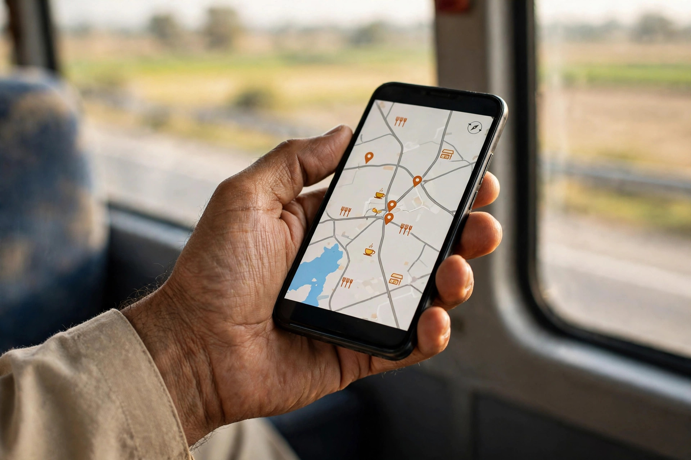

Stand by the main road in Chowk Azam and watch the town’s second market pass by: trucks between districts, buses full of passengers, families travelling to Mianwali or Multan. Almost none of them planned to stop at a particular business. Yet many will stop somewhere, for food, fuel, a repair, a prayer break, medicine, or simply a rest. The stop is decided in motion, by the passenger with the phone, and it is decided from what Google shows: distance ahead, open or closed, rating, and a photo that suggests the place is real and welcoming.
This passing trade is where a small town business gains or loses money it never sees counted. This article looks at the traveller’s decision moment by moment, and at the practical things a Chowk Azam business can control: map accuracy, open-now truth, photos that work at a glance, reviews from earlier travellers, and speed of answer. Zaheer Seo Expert is based in Layyah and helps Chowk Azam businesses build this visibility online and by phone. The road will keep flowing either way; the question is whether it stops for you.
The Sixty Seconds Before a Stop
A traveller’s search is unlike a local’s. It happens at speed, often on a weak connection, with a driver waiting for a decision. The phrases are short: restaurant near me, mechanic open now, pharmacy on the way. Results are scanned, not studied. The business that wins is the one whose listing answers instantly: clearly open, clearly near the route, clearly decent, judging by its stars and its latest reviews.
For this one customer, your Google listing is your entire business. That is not a reason to resent the change; it is a reason to treat the listing with the same care as the shop front it now stands beside. Our SEO services in Chowk Azam page explains the work involved in keeping that digital front in order.

Be Exactly Where the Map Says You Are
For passing trade, a misplaced map pin is a lost customer in the most literal sense: the navigation ends at the wrong spot, the driver concludes the business has closed, and the moment passes. Check your pin in satellite view and drag it onto your actual building, on the correct side of the road. Ground-floor accuracy matters on a highway where turning back is awkward and the next town starts to look easier.
Your address description should help a stranger, naming the road and a known landmark as locals describe your spot, since travellers navigate by such references when data falters. Then test the directions yourself from both directions of travel. If Google routes a driver past your door or down a side street, fix the pin rather than blaming the driver, because the next hundred drivers will follow the same route.
Open Now: The Two Most Valuable Words
More passing searches are lost on hours than on any other detail. A listing that shows no hours, or hours that are wrong, fails the traveller’s first test, and one marked closed loses stops it could have won on days you were in fact open, such as holidays when routines change. Keep hours exact, update them for Ramadan, Eid and seasonal patterns, and use Google’s special hours feature rather than leaving the regular ones to mislead.
The reward for this accuracy is being among the few results still standing when a traveller filters by open now, late in the evening, when competition quietly drops away.
- Set exact hours and update them for every holiday
- Use special hours instead of leaving wrong regular hours
- Mention differing hours for counters or services
- Check the listing as a traveller would, after dark

Photos and Reviews That Work at a Glance
A traveller cannot inspect your premises, so photographs do the inspecting. The first picture should show the business as seen from the road, board readable, entrance obvious, parking or stopping space visible where it exists. Follow with the inside: clean seating, stocked shelves, an equipped workshop. Blurry or dark images suggest a place to pass, however unfair that judgement is.
Reviews are scanned for reassurance, especially the recent ones and any from travellers themselves, which mention exactly what the next traveller fears: being overcharged as a stranger, waiting too long, poor quality far from home. Reply to traveller reviews with particular warmth, and never argue with a complaint written from the road. For the full method of earning and answering reviews, see our article on Google reviews for Chowk Azam businesses.
Speed: Answering Before the Next Town
When a traveller calls, the clock is literal. A phone that rings out is interpreted as a closed business, and the search moves on within the minute. During opening hours, treat the business phone as part of the road frontage: charged, carried, and answered, with missed calls returned immediately.
Speed also means the stop itself respects the journey. Clear parking guidance, quick service for common needs, and honest time estimates turn a one-time traveller into a reviewer and, on a regular route like this one, sometimes into a returning customer who plans the stop in advance. Many truck and bus drivers travel the road weekly; winning them once, well, can mean winning them for years.
Putting the Road to Work, Honestly
None of this involves intercepting travellers with tricks. The method is simply to be findable, accurate and welcoming at the exact point of decision, and then to serve the stop well. Passing customers are the hardest audience to fool and the easiest to please: they expected little, stopped on trust in a screen, and remember being treated fairly far from home.
If you want this side of your presence set up properly, Zaheer Seo Expert can do it from Layyah, online and by phone: pin checked, hours disciplined, photos chosen, reviews answered, the listing tested as a traveller sees it. There is no office in Chowk Azam; all of this is managed remotely. Chowk Azam’s road brings the customers past your door every day. Good visibility is how a fair share of them turn in.
Frequently Asked Questions
Why do travellers ignore shop boards and use phones instead?
Because the phone answers before the board is reached: whether the business is open, how far ahead it is, and whether strangers rated it well. The passenger deciding the stop may never look at the roadside at all, so the listing has become the real signboard.
What single fix wins the most passing trade?
Correct, current opening hours combined with an accurate map pin. Most passing losses happen because a business looks closed when it is open, or because navigation ends in the wrong place and the driver gives up.
Do reviews from travellers carry special weight?
Yes, because the next traveller shares the same worries: fair prices for strangers, speed and reliability far from home. A few kind reviews from people who stopped on the road reassure exactly the audience reading them.
My business is a few streets off the main road. Can I still win passing customers?
Yes, if your pin and directions are flawless and your listing is strong. Travellers will leave the road briefly for a well-rated business with clear routing, especially for food, repairs and services worth a short detour.
Want More Customers From Google?
Call 0327 7350830 or email seozaheer14@gmail.com. Zaheer Seo Expert, Layyah - Rajan Shah Road, Rana Nagar, Chak 116 TDA, Pakistan. Open 24 hours.
Get Your SEO Strategy →